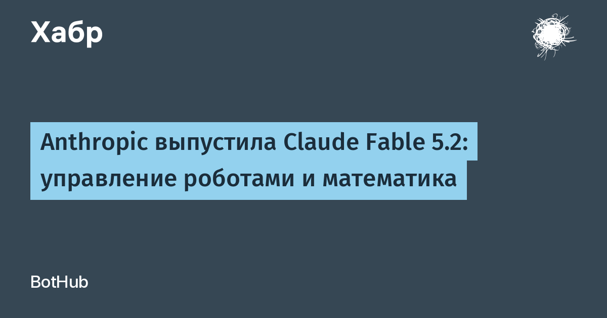

9 ноября 2026 года Anthropic анонсировала Claude Fable 5.2 и Claude Mythos 5.2 — апгрейд моделей, которые компания позиционирует для «самых непосильных технических задач». Это одна и та же базовая модель: Fable доступна всем пользователям, но со строгими кибер- и биозащитами, а Mythos открывают только проверенным организациям через расширенные программы верификации Life Sciences и Cyber — тем, кто занимается оборонительной кибербезопасностью и биомедицинскими исследованиями.
По данным самого анонса, новые модели генерируют ответы до 30% быстрее версий 5.1, а цена снизилась до $8 за миллион входных и $40 за миллион выходных токенов; отдельный быстрый режим разгоняет генерацию до 2,5 раза за $16/$80. В бенчмарках Fable 5.2 обходит флагманский Opus 5.5 почти по всем направлениям: агентное программирование FrontierCode 2.0 — 49,1% против 45,5% у Opus 5.5, FrontierSWE v2 — 69,9%, научные исследования Terminal-Bench-Science — 74,6% (у Mythos 75,3%). Самый заметный скачок — в робототехнике: RoboDojo Sim сразу 64,9% против 27,6% у прошлой Fable 5.1. У Mythos отдельно выделяются результаты по кибербезопасности: CyScenarioBench 76,3% и «переоткрытие» уязвимостей CVE Rediscovery 89,6%.
Anthropic подкрепляет релиз «живыми» достижениями: до релиза модель формализовала доказательство Великой теоремы Ферма за 30 часов, помогла инженерам компании завершить миграции ПО, которые считались невыполнимыми, спроектировала с нуля три работающих электронных устройства и сделала существенный прогресс в роботооценках. Правда, универсального превосходства нет: в автоматизации бизнес-процессов AutomationBench Fable 5.2 набрала 51,4% и уступила Gemini 4 Carbon (53,9%), а для обычных повседневных задач сама Anthropic рекомендует начинать с Opus 5.5, подключая Fable для самого сложного — в роли советчика или оркестратора более дешёвых моделей.
Отдельно компания подчёркивает: поведенческие тесты включали новые оценки на побег из песочницы, защита от дистилляции названа «самой сильной из когда-либо внедрённых», а киберзащита Fable стала строже при меньшем числе ложных блокировок. Полная системная карточка опубликована вместе с анонсом. На этом фоне TechCrunch отмечает контекст выпуска — дебаты вокруг рисков рекурсивного самоулучшения моделей (RSI), которые усилились после нашумевших аудитов METR о темпах внутреннего ИИ-развития в самой Anthropic.